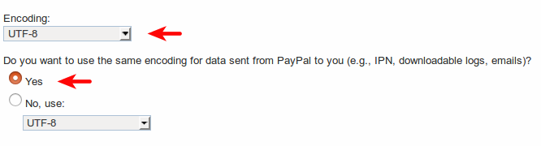

PayPal-это простой для настройки способ онлайн-оплаты. Он также единственный без абонентской платы. Мы определенно рекомендую его для любого интернет-магазина.
Настройте свой аккаунт PayPal
Создайте бизнес аккаунт PayPal <https://www.paypal.com>`__ или улучшите свой аккаунт до уровня бизнес-аккаунт если у вас базовый аккаунт.
Войдите в систему PayPal и открыть настройки Вашего профиля.

Теперь войдите в меню My selling tools.

Начнем с Website Preferences.
Включить Auto Return и введите Return URL: <odoo_instance_url>/shop/confirmation. Убедитесь, что этот адрес использует правильный протокол (http или https).

Включить Payment Data Transfer **. При сохранении генерируется **Identity Token. Вам позже будет предложено ввести его в Odoo.

Затем, возвращайтесь в свой профиль, чтобы активировать Instant Payment Notification (IPN) в My selling tools.
Введите Notification URL: <odoo_instance_url>/payment/paypal/ipn

Теперь вы должны изменить формат кодировки запроса платежа, отправленного Odoo в Paypal. Для этого вернитесь в My selling tools жмите PayPal button language encoding в разделе More Selling Tools.
Затем, нажмите кнопку More Options и установить два формата кодирования по умолчанию, как UTF-8.
Совет
Если вы хотите, чтобы ваши клиенты платили без создания счета в PayPal, Paypal Account Optional должен быть включен.

Настройка Odoo
Откройте форму настройка PayPal в . Введите свой Email ID и Merchant ID и выберите использовать IPN.

Они обе в вашем профиле PayPal в разделе .
Введите свой Identity Token в Odoo (из опции Auto Return). Для этого откройте настройки и включить Режим разработчика.
Затем перейти к и создайте параметр со следующими значениями:
Ключ: payment_paypal.pdt_token
Значение: ваш PayPal Identity Token
Запуск
Ваша конфигурация готова! Вы можете сделать видимыми PayPal в вашем интернет магазине, для этого активировать Production mode.

Комиссия
Вы можете взимать дополнительную плату с клиента для оплаты комиссии PayPal . После перенаправления на PayPal, ваш клиент видит дополнительную сумму, которая прибавляется к сумме заказа.
Чтобы включить эту функцию, перейдите во вкладку Настройки в форме PayPal в Odoo и выберите Add Extra Fees. Комиссии по умолчанию для США можно увидеть ниже.

Чтобы узнать комиссию для Вашей страны, перейдите на страницу Paypal Fees.
Проверка работы сервиса
Вы можете проверить работу системы благодаря Paypal Sandbox.
Авторизируйтесь на Paypal Developer Site с вашими учетными данными на PayPal. Это позволит создать две песочницы счетов:
Бизнес счет (для использования в качестве продавца, напр. pp.merch01-facilitator@example.com).
Личного счета по умолчанию (для использования в качестве покупателя, например pp.merch01-buyer@example.com).
Авторизируйтесь в Paypal Sandbox с учетной записью продавца и следовать тем же инструкциям по настройке.
Введите ваши учетные данные в песочнице в Odoo и убедитесь, что PayPal работает в тест режим. Кроме того, убедитесь, что режим подтверждения PayPal не Authorize & capture the amount, confirm the SO and auto-validate the invoice on acquirer confirmation. В противном случае подтвержденного счет-фактура будет автоматически создаваться при завершении сделки.
Протестируйте транзакции с использованием песочницы Личный счет.